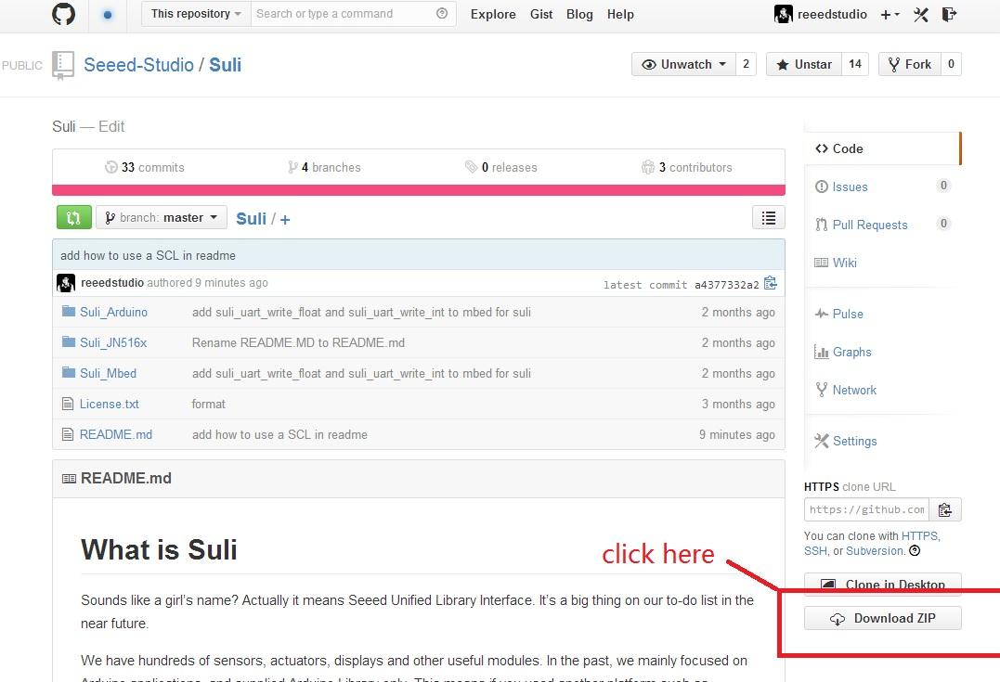
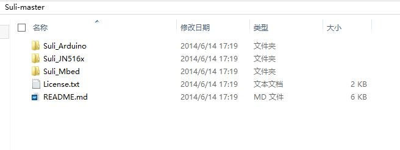
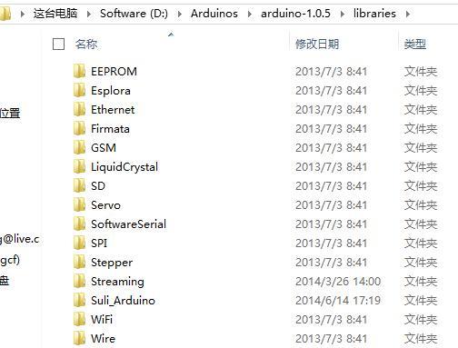

If you are not familiar with Suli, please click here to get more details.
In this wiki page we will talk about how to use a Suli-Compatible Library.
We'll take Suli for Arduino an example.
First of all, we download Suli here,

After download Suli, we extract it to anywhere

Then we copy Suli_Arduino Folder to Library folder of Arduino:

Up to now, we had install Suli for Arduino. Then we download a Suli-Compatible Library for an example.
We take Grove - 3-axis Accelerator for example. We can download this Grove's Suli-Compatible Library here
Then we put this library to Libraries folder of Arduino. If you find that there's "-master" in the behind of the folder name, just remove it.
Just like we use Suli for Arudino. First we should download Suli for your platform, such as Suly_Mbed.
Then put it to you project. And download a Suli-Compatible Library that you need. Then you can use it.